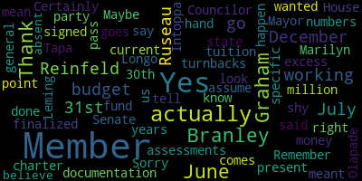
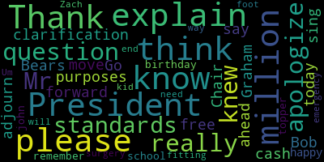

AI-generated transcript of Joint Meeting of the Medford City Council and Medford School Committee to Discuss FY 26 Budget
English | español | português | 中国人 | kreyol ayisyen | tiếng việt | ខ្មែរ | русский | عربي | 한국인
Back to all transcripts
[Lungo-Koehn]: CFO Dickinson is logged in. Good evening. First joint session, March 19, 2025, will come to order. This meeting will take place 6 p.m. in the Alden Memorial Chamber, second floor, Medford City Hall, 85 George P. Hassett Drive, Medford Mass, and via Zoom. You can also watch live, channel 22, channel 43, or YouTube in medfordtv.org. To submit written comments, I have the, oh, I actually printed the, I printed the city council agenda, I think. So to submit written comments, please email ahertobees at medford-ma.gov. I think that should suffice. And, uh, Yep. If we can call the role of the school committee, please. Member herself. No.
[Ruseau]: Member Branley present. Ever Graham.
[Lungo-Koehn]: 7 present, 0 absent, the entire school committee is here.
[Hurtubise]: Mr. Kirk, if you could please call the roll for the council. Councilor Callahan. Vice President Collins. Present. Councilor Lazzaro. Present. Councilor Leming.
[Leming]: Present.
[Hurtubise]: Councilor Scarpelli.
[Leming]: Present.
[Hurtubise]: Councilor Tseng.
[Bears]: Present. President Bears. Present. 7 present, none absent. Meeting is called to order. First matter is the joint rules. Have folks had time to read the joint rules? Are there any comments from members of the Council on the joint rules?
[Lungo-Koehn]: Motion to waive the reading.
[Bears]: We can do that. Maybe we make it a motion to waive the reading and approve and then we can discuss it. Okay, then we don't have to vote 14 times. All right, so I have a motion and a second on the council. Is there a motion and a second on the school committee?
[Lungo-Koehn]: Yes.
[Bears]: Great. All right, any discussion from members of the council on the joint rules as proposed?
[Lungo-Koehn]: Any from the school committee?
[Bears]: Seeing none on the motion of Councilor Callahan, seconded by Councilor Lazzaro. Mr. Clerk, please call the roll to approve the rules.
[Hurtubise]: Councilor Callahan. Yes. Vice President Collins. Yes. Councilor Lazzaro. Yes. Councilor Leming.
[SPEAKER_13]: Yes.
[Hurtubise]: Councilor Scarpelli.
[SPEAKER_13]: Yes.
[Hurtubise]: Councilor Tseng.
[Bears]: Yes.
[Hurtubise]: President Bears.
[Bears]: Yes. I've been affirmed and then the negative motion passes the council.
[Lungo-Koehn]: Motion has also taken place in seconded for the school committee member so call the roll.
[Ruseau]: Certainly, Member Branley.
[Lungo-Koehn]: Yes.
[Ruseau]: Member Graham. Member and Tapa. Yes. Remember all the party. Yes. Member Reinfeld members so yes Marilyn go current.
[Lungo-Koehn]: Yes, 70 affirmative Sierra the negative motion passes. So, rules are adopted for tonight's meeting and moving forward. Thank you. We have a resolution by President Bears to discuss the schedule of annual budget process for fiscal year 2026.
[Bears]: And whatever it is on your agenda, I don't, did you have a number? I know on the school committee version of this. Okay.
[Lungo-Koehn]: 25039 on the school committee agenda. And tonight we, I don't know if you want to talk about tonight. We have chief of staff, Nina Nazarian and CFO, Bob Dickinson from the city of Medford. And when we're ready, CFO Dickinson has a slideshow presentation and can present an overview of the city's finances.
[Bears]: Great. We had a meeting last night on recommendations. We're planning to send them over to your office, this council, to the mayor. I know you guys have had a budget process. I'll go to member, well, you should go to member Graham.
[Lungo-Koehn]: Member Graham?
[Graham]: had a preliminary budget meeting where we've started talking about the school committee budget from an enrollment projection standpoint and from a funding revenue sources perspective. So that has already happened. We have a meeting tomorrow night where we will hear from our finance office and the superintendent about their recommended budget. And our budget hearing will be held on Monday, 4th. Thank you. My days are running together, but we will have a budget hearing on the 24th, and we will either take action to send that to the mayor that evening or in a subsequent meeting the first week of April. So we are slightly off what our intended target was, and we discussed that back in January, but we had to make way for the the budgeting process for the supplemental budget for FY 25. So that sort of took priority in January. We'll be back on track after that and be ready to submit to the mayor our request to the municipality in early April.
[Hurtubise]: Is that member Reinfeld? Nope. Is there, are you, have you requested? For some reason, mic five has a request on it. All good. Great.
[Lungo-Koehn]: No other comments or questions, we'll start the presentation. See you all.
[Bob Dickinson]: I'm hoping all the technology actually works. I know this from Nantucket Town meetings when people have the microphone here. It's like, no, pretend you're Mick Jagger. So I'm trying to share my screen. Is that working? Share. OK. If I can actually make all the rest of this stuff go away. Financial update. All right, this is the mandated finance department update for fiscal, what's been going on in fiscal 2025, throughout the new estimates for Our budgeting purposes for fiscal 2026 will go through the levy limit local receipts, cherry sheets, other revenue. OK. My audio and video are off for Zoom. And I have an echo so I can start playing Pink Floyd songs.
[Hurtubise]: A low tech solution will
[Bob Dickinson]: see if he's got a thick book in there or something. Checking 1, 2, 3. Everybody can hear me now without the. technical difficulties. I just got back from the annual Mass. Municipal Auditors and Accountants Association spring training. So I got in a car at about 1.30 and drove from Amherst to here. So I wasn't able to get here early enough to make sure all this works. They're a lively bunch, the auditors and accountants. Yes. OK. So again, the update for 2025, the update revenue estimates for 2026 go through the levy limit, local receipts, cherry sheets, other revenue. And what we think, what our projection right now is for what might be available for the budget for fiscal 2026. and various side notes on explaining how we got to these numbers. And of course, the caveat on all of this is that these numbers change. Unfortunately, I don't have a crystal ball, and I can't look into the future and see exactly how much we'll have. Various things that change, well, we can go through them. All right, for the finance department, we finished the state reporting. The fiscal 24 books are closed. The 24 audit, actually, we should have that in hand. I didn't change that on the slide, but we should have that in hand probably by Monday morning, and it will be submitted. Also, the single audit will all be done well before the end of March. So pre-cash retained earnings were certified. Pre-cash as of June 30, 2024 is $28,343,997. Retained earnings for Water Sewer Enterprise is $12,653,475. Last year, we had $34 million in free cash, roughly. But we used $14 million of it to fund the stabilization funds. And then we had about $1 million in turnbacks. And we had $6.2 million in excess local receipts, which is why we were able to take 34, drop it to 20, and then come back to $28 million. Sure.
[Ruseau]: Member Ruseau? Thank you. Could you tell us what turnbacks are?
[Bob Dickinson]: When a department doesn't spend its whole budget. I mean, that's where free cash comes from. You estimate your revenue. If you get more revenue, obviously you'll make more, you know, you'll have more free cash, but also in situations, for instance, police and fire will frequently have budgeted positions. but they're unable to be filled because there simply aren't policemen and firemen out there. So that can be a significant source of a turn back. We just didn't spend the whole budget. So on the recap, the budget, your appropriations have to match what you're taking in. So if you spend less than the appropriation, then that goes to free cash.
[Hurtubise]: Councilor Lazzaro.
[Lazzaro]: Very quick question. Can you send us this presentation after the meeting?
[Bears]: What?
[Lazzaro]: Can you send this presentation to us after the meeting? Oh, yes, of course. Thank you so much.
[Bob Dickinson]: All righty.
[Bears]: I just had one question, Bob. Are you going to go into what the excess local receipts were?
[Bob Dickinson]: I wasn't planning to do details on that, but I can. I can easily send the council exactly what happened.
[SPEAKER_14]: That would be helpful.
[Bob Dickinson]: I know one big part of it, which I'll touch on further on in the presentation, was because interest rates remained high, and our treasurer did a lot of work to make sure that we were, while keeping cash on hand to pay payroll and stuff like that, that everything else was invested in higher interest rate you know, vehicles. And we still had a whole bunch of unspent ARPA money. So if you have an extra $20 million in ARPA money that has been allocated but hasn't yet been spent, it's sitting on our bank account. And that is general fund revenue. So that's a nice one there. I'll say this again later, but I do not expect for local receipts next year, which is where investment income comes into the picture, I don't expect what we're going to be getting in interest next year to be anywhere near what we got in fiscal 2024. But I can definitely go through the numbers and show exactly where all this money came from.
[Bears]: Yeah, I think especially hearing that that's coming from interest on cash on hand or interest on investments, just knowing how much of that 6 million was from interest on cash we don't expect to have in the future. I'm just wondering how that excess local receipts affects our baseline revenue estimates for fiscal 26 essentially.
[SPEAKER_13]: All right. Yes.
[Bears]: All right.
[Scarpelli]: Mr. President, I have a question. Thank you. I apologize. I just didn't really know if you knew my standards. I just have to, just for clarification purposes and move forward, just to say again, Bob, we're at $28 million again in free cash?
[Bob Dickinson]: Yes.
[Scarpelli]: That's what we have today, $28 million again.
[Bob Dickinson]: Yeah. Thank you. Straight from the Bureau of Accounts, that's what they say we've got. So there we are.
[Bears]: And just to clarify, so essentially, The balance was 34 million last at the end of 2020 on 630 23, but we appropriated 14 million so that's a minus 14 million. And then there was a turn back so under spending of a million, and then an unexpected. over overage and local receipts of 6 million and a big portion of that was from interest that we hadn't expected to earn because interest rates were high, right.
[Bob Dickinson]: Okay. Then the other, the other thing that would add into. into free cash is obviously, you know, we have accounts receivable for tax billings and personal property tax, but that doesn't mean we're going to get it all in this year. It usually is around the same amount that we actually billed out. But if, for instance, if in one year people in arrears, your accounts receivable goes down when they pay you off, but your receipts for that year are larger. Does that make any sense? I'm getting into the weeds on the tax recap and how the city is funded.
[Bears]: Yeah, I just wanted to clarify. sometimes people we didn't have $28 million of new money that was Oh, no, you know, it's a balance. We actually the free cash balance decreased by $6 million. All right. Thank you.
[Bob Dickinson]: 2025 general fund budget was $189,407,845. Medford Public Schools received $83 million. And we keep an eye on all the budgets. We also, especially Medford Public Schools, we make sure that when we're getting into the end of the year that nobody's gonna be over budget. And that usually means me working with Noel and Jeremy Q to make sure that all of the funds that might come in from grant money, those positions have actually, we've actually charged everything to the right places. And there are some year end transfers that happen that. But right now we expect everything to be fine for the Medford public schools. Revenue estimates. I'll go over this. I would imagine everybody here probably has a basic understanding of how we make these revenue estimates, but just to go over it again, Proposition 2 1⁄2, you take last year's levy limit, you multiply it by 1.025, and that's your levy limit for the next year. Once you've done that, you add in certified new growth. This is another, the levy limit itself is based on the prior year's levy limit. We know what that's going to be. Certified new growth is whatever the assessors can come up with to add to it. So right now that is just an estimate, but it includes all sorts of basic things. If you have a lot, you subdivide it. Now you have two lots, it's worth more than it was. So that's certified new growth. And things as little, you know, if you have a house and you put on an addition, there's a bathroom, that's new growth. levy limit that's self-explanatory. You put them together, and that's what you can levy. And we also have to estimate state aid, cherry sheets, Chapter 70, school aid, veterans benefits, charter school money. And when we're doing that, we're doing the net of what the state aid will be and what the state assessments will be. We can go into that in a little bit. So fiscal year 2025, levy limit is 153,506,550. Proposition 2.5 increase is $3,837,663.75. I doubt we'll be able to capture the $0.75, just mathematically. But it shouldn't be too hard to deal with. Our current new growth estimate from Jared, our assessor, is $2.2 million. So our new capacity estimate is $159,544,213.75. Local receipt. Did I not change this? Oh, yeah. For fiscal 2025, local receipts were estimated at $21,124,900. This year, we're estimating them at $2,500,000. Local receipts, the big ones are motor vehicle excise, $7 million. I'm expecting that to be relatively flat. It increased a lot after the pandemic when people couldn't get cars or didn't want to buy a new car. But now people have bought a lot of their new cars. And every year, you have a car. your motor vehicle excise goes down. So unless people rush out and buy a whole bunch of new cars, I'm expecting that to be pretty much flat. Hotel and meals taxes, those have been increasing slightly every year. So we're We're going to go up a little bit on that one. Building permits, again, that's another one. Hopefully, people are building stuff, especially because if you get a building permit, that's one way the assessor figures out what new growth is going to be. He gets all the building permits and goes to the houses and says, hey, you just put an addition on. So your assessment goes up. And then, as I said, investment income, $2.5 million. I expect that's going to be less this year because of all the money that we've actually spent. Anyway, local receipts for 2026, I'm estimating $21,500,000. Local receipts is one of those things that you It can vary a lot depending on economic conditions. So people in my position ordinarily try to make sure that we're doing a pretty conservative estimate of what it is. If you don't, and you get to recap time, the Department of Revenue can look at your actuals for the year and say, you're not going to make your revenue targets. And that means having to vote a whole new budget, because the appropriations have to meet the revenues. So that's one place in the recap that we tend to be reasonably conservative I try to make it as close as I can, but I'm not. I will never sit there and say, OK, we made this much last year. Now we're going to make more this year. I will never expect to make more than we did in the last year. I usually put it in to be less, just to be conservative, to make sure that if something actually happens in the economy, that we won't miss our revenue targets and then have to revote the whole budget based on the new numbers. Cherry sheets. initial proposal from the governor, which is the one that we use it again, it tends to be the most conservative estimate of what we're going to get. Usually it's a little bit more, but that's not always the case. So estimated receipts, 35 million charges. is close to $13 million. So the net cherry sheet revenue should be $22,358,418, according to the governor's current proposal. If you don't know, cherry sheets go through the governor, and the House votes on what they think they should be, and the Senate votes on what they think they should be. And then we get the final numbers when everybody gets together and makes a deal. So we had three more iterations of what cherry sheet receipts might be. So that's another place where there's significant uncertainty about what we might actually end up with at the end of the year.
[Lungo-Koehn]: Member Graham.
[Graham]: planning purposes for the cherry sheet, FY26 net cherry sheet?
[Bob Dickinson]: No, sorry, that's a typo. That would have been the 2025 net cherry sheet, I believe.
[Graham]: OK, so the 22-3 is what you're estimating for cherry sheet? Yes, that's what I'm estimating. OK, thank you.
[Bob Dickinson]: If you want, I have the, it's easy enough to get on the DOR website what cherry sheet numbers for the last 10, 15 years. I actually have a spreadsheet. When I'm doing the spreadsheet to put together the recap, I actually have the exact numbers from the last several years so I can make a prediction on where they're going.
[Graham]: a reduction in cherry sheets as you do your budget planning, or are you?
[Bob Dickinson]: At this point, no. I'm using the governor's initial cherry sheet proposal is already out on the website. So we just go with that number, because usually it's right around there, if not a little bit more.
[Graham]: OK, perfect. I just wanted to clarify. Things are wild right now, so thanks.
[Hurtubise]: Thank you, any questions from the public on that? No, sorry. Go ahead, Bob.
[Lungo-Koehn]: I can just comment, too. I think most cities and towns use the governor's proposal, because that's all we really have in the House and then the Senate and then joint conference. If anything changes, we're going to have to adjust. Hopefully, we just stop and knock down and spend some time in the state house yesterday. So they are watching what's going on federally and are going to adjust accordingly, depending on if and when. So we're going to keep track of it as much as we can.
[Bob Dickinson]: Alrighty, so other revenue that the city receives casino mitigation funds, funds, these are transfers into the general fund to fund positions casino mitigation funds three positions. We get money in from the sales of cemetery lots and the perpetual care trust fund. So every year the treasurer sends us what the available revenue is from the trust. from the interest on the trust. And that gets added to the budget as a transfer in from the trust fund. Then there's indirect costs. Water and sewer enterprise fund is assessed for expenses budgeted in the general fund. AP payroll, processing, healthcare, we have to, that's another number that we have to pay a lot of attention to, to make sure that we've got good estimates of what that might be. We don't at this time, we've been told that health insurance is going up by probably 10%, but we do not at this time I believe have the actual final numbers on what our health insurance costs are going to be next year that can could change at the MMA concert conference that I was just at. Some communities are seeing increases of as much as 20% in their healthcare costs. There are many communities that are experiencing 12, 15%. And when you multiply 20% by what we're paying right now, which is $25 million or something like that, that eats up a lot of your budget. So that's something we're working on very closely and definitely keeping an eye on. So this is pretty much the summary, if you can all see it without the caption. So you can see the breakdown of all these numbers, the 2025 levy limit 153 million times 2.5 plus the new growth. Gives us the 159 million for property taxes. That flows to the next section. So we're saying 21.5 for local receipts, state aid, 35 million, indirect costs, sales of lots, et cetera, 218 million. Then below that, we have non-budgeted expenses. These appear on the recap page two. They're non budgeted, and they are the things like the cherry sheet assessments, which are going to be 12, which we're putting in the governor's numbers again that's the breakdown of this net is $12.8 million. tax title. It's a small amount, but that allows the treasurer to do the legal work for properties where the homeowner has not paid their taxes in a while. Snow and ice deficit last year, it wasn't anywhere near that. I think it was $400,000, but We know we've had a little bit of snow this winter, so that's a legal deficit that you can put on the books. Right now, the estimate is $750,000. Hopefully, with the warm weather, we won't be experiencing another huge snowstorm, knock on wood. But right now, that's what it looks like. Our snow and ice deficit will be. That has to be raised on the recap. And then every year, it's good to put It's good to keep a close eye on your overlay. This is the money that funds tax abatements. So I work with the assessor to see what's out there. And we total up how much money we actually have in overlay. And we put in what we think we might need in case things go against us. And we have to, I think right now there are a couple of large projects where you know, lawyers are involved and they want a big abatement. So that's something that I work with the assessor to make sure I have a good number and we've put enough money into the overlay so that we have enough money to pay these if we need to. And that gives you the bottom line. It's roughly a little less than $205 million that we have available to spend at this point in time, as far as I know. Again, if you know where I could get a crystal ball so I can do this better, that would be great. Is this making sense to everyone?
[Hurtubise]: Is that all of the, oh, looks like Paul wants to.
[Lungo-Koehn]: Yep, you have some more slides too, right? Member Ruseau.
[Ruseau]: Thank you. I just, the state assessments, I did look it up and just shy of 8 million of that is actually charter tuition. Just wanted to point that out, not for you, you know that. And Councilor Leming has his hand up.
[Bears]: Member Ruseau just made the point that 8 million of the state assessments is for charter schools. And go ahead Matt, Councilor Leming.
[Leming]: Thank you. I understand that this could be outside the purview of the budget. It could be like tied up in grants and stuff like that. But Mr. Dinkinson, is there a way to get sort of a year by year number of the amount of money that the city receives from the federal government? Or are those statistics or trends handy anywhere?
[Bob Dickinson]: Right now, we're keeping a close eye on that. I'm trying to formulate a list of all the monies that we get from the federal government. I don't have an exact figure for that at this point in time. But I could probably get this. The single audit would have all the big numbers for that. I could look into putting that together.
[Lungo-Koehn]: And I can add to that it's been a project we've been working on since January to try to pull the numbers from every department. We just recently gave everything to finance to kind of tidy up so we can get you a copy of what's currently we're receiving in federal funding a lot of that is recurring but of course there's some that are that are grants that are one time or over several year period but I think it would be a huge endeavor to go back years, but I think we can definitely get you a snapshot of what we're looking at now within the next several weeks. I know the finance department's been working on trying to get that together in a readable format for us to just keep an eye on as these are such uncertain times.
[Leming]: Thank you. Even, even just a ballpark estimate of previous years. And this year, if you have it I understand it could be irresponsible to offer that now but any information is appreciated. Thank you.
[Bears]: Thank you.
[Lazzaro]: Um, do you have an estimate? Or my own education because I can't remember the new growth in prior years. Is this average amount or a smaller amount or larger amount?
[Bob Dickinson]: It seems small to me, but well, uh, new growth really depends on the year. It also quite frankly, depends on staffing. If, um Because in order to assess new growth, you have to actually physically go to the property and say, look, you've got an addition. Our previous assessor worked very hard on making sure we got those numbers. And we're definitely keeping up with that. But it can vary a lot per year. It's straight on the recap. So if you want how much we got for the last 10 years, I can put that together really quite quickly. You can just go into gateway and this is what it was. It's certified by the state. So once the state says you can put in this number, that's what you can put in.
[Lungo-Koehn]: And I can just add, we did look into that last year. I think we looked back about 20 years and there's only been three years where it's been over 2 million and that's been in the last four or five. Okay, great. That's helpful. Thank you. I appreciate that.
[Nina Nazarian]: that network? Okay, good. I was going to add what the mayor added, but also will add that as Bob stated, as finance director Dickinson stated, this is a particularly challenging year because we have transitioned and we have a new chief assessor, Jared Yazian, has become the chief assessor, which we're very excited about. We are working towards hiring the assistant assessor, but we're also in a reevaluation year. So It's a significant amount of work and we have a vacancy. So just to kind of compliment, but we've been in the ballpark of $2.5 million. This year, we're just being mindful that there are elements that are a little bit beyond our control despite how hard we've been trying to move that wheel. So anyway, thank you.
[Bob Dickinson]: Moving along. So as in previous years, the assistant finance director, chief of staff, and mayor have been in correspondence with all of the department heads about the fiscal 26 preliminary numbers. And the assistant finance director really does go through these budgets with a fine-toothed cone to make sure that, you know, to make sure that any unspent categories from prior years. We look at them, we make sure that that is in there. Again, there's things like police salaries, for instance. We may have positions available in police and fire salaries that can't be filled, but we still have to be cognizant of the fact that we might be able to fill them, so we have to have the budget there in case we can't. So getting the people for the unfilled positions is important. This will be, obviously, this work is ongoing until the final budget is submitted to the council, which should be at the end of May. So, and yeah, I guess our deadline is Friday, May 30th, to get all this stuff in front of you. Back to health insurance, yes. The fiscal 2025 budget was $28 million, so now we're over $31 million estimated in health insurance. That's significant. If you think about how we raise revenue, the big one is Prop 2.5 and new growth. If we can get 2.5%, we know we can get, and then new growth Historically it's been on the average since I've been here on the average of three and a half to 4% total that our levy limit has gone up. So if you have a significant part of your budget that is going up 10% and historically the amount you get from your tax levy goes up around 4%. That's a big gaping hole in the budget. It's going to be difficult to weather that. And hopefully, in subsequent years, it won't be going up that much. But that's one thing we're working very hard to figure out how to resolve. Workers' compensation for this year, it's on target, except workers' compensation, the problem with trying to estimate that as we'll have workers who have been out because of injuries for a long time, and they will, the HR department and legal will be working on making, you know, saying, okay, if we give you this much, have we settled this claim? We had a very large settlement in July. It was $165,000. So at that point, that's probably going to be over budget by the time we get to the end of the year. pension obligations. I'm on the retirement board and we have the current schedule that we have keeps the increase that we have to pay every year to around three and a half to 4%, which is very good because it keeps up, like I said before, If your tax revenue is going up by roughly 4% when you add in the new growth, if you have your pension obligations going up more than that, that's a problem. This way, we'll be paying more every year, but hopefully, it will only take up the same portion of the budget that it did last year. And of course, contractual increases. When we're putting together the budget, we have to look at what the contracts say. That's non-negotiable. We signed a contract. So if it says that in July 1st, everybody in the clerical union gets another 2.5%, well, that's gonna go up. So those are the main things that we look at very closely when we're doing the budget. Revenue adjustments, increased local receipts. By a little bit, it's conservative. Again, I have to be able to, I can't go out on a limb on this without having the DOR call me and say, hey, Bob, do you really think you're gonna make that much more money? So I keep them conservative. I think right now we're at, Um, putting 400,000 into overlay for 2026. That was an adjustment. We think we can weather that. That probably gives us a nice enough cushion in the overlay so we can pay for any large abatements we might have to pay. And that's also... It's an adjustable number in the recap, but when my snow and ice just jumped by $350,000, I'm like, okay, well, maybe we can drop this by a little. Again, this is just an illustration of how, when you're putting the budget together, there's a lot of moving pieces to it, and a lot of them can change. So I did change that number. The latest new growth estimate is $2.2 million. This is another kind of complicated accounting detail. Some projects that are not finished or some nonprofit organizations don't pay property taxes. They pay what's known as pilot or payments in lieu of taxes. Now, there's a development through the Mystic Valley Development Corporation that will be moving off of pilot payments. They've been paying us pilot payments for, I think, 10 years. That's gonna be part of the $2.2 million that we're expecting in new growth, because we will now put them on the tax rolls, which is good because then every year we can add that to our levy. But those pilot payments won't be as large anymore because that was a significant chunk of what we were getting in pilot payments. So that's part of local receipts. So that's why I try to be conservative with local receipts.
[Bears]: I just had one question on that, Bob. And I think for folks, this is the essentially the riverside development riverside chest done through the brownfields and right complicated thing are the pilot payments, more than what we will end up receiving in taxes from the properties.
[Bob Dickinson]: We will get more in taxes than we were getting in pilot payments. And that adds to our levy. So every year, 2.5% is tacked onto that.
[Bears]: So it's a net gain, but it's shifting into new growth.
[Bob Dickinson]: It's just shifting. Yes, it's shifting into new growth from local receipts. And again, when I started here, when we're reviewing the budgets, we've been very careful to make sure that large capital expenses aren't included. in operating budgets. So if the DPW, for instance, needs a new truck, we want to keep that separate because we want to keep the operating expenses being things like paper supplies, salt, stuff that is consumable. In general, the idea is that if you have an asset that's going to last more than five years, five years or more, that you actually keep it out of the operating budget and you pay for things like that by using free cash or other sources. And again, we very closely review all the budgets going back about five years to see if everybody's spending all their money and what they're spending it on. We've been centralizing the facilities costs and information technology, trying to get the budgets in the right places to make sure that if there's savings or efficiencies we can get from that, that we actually capitalize on those. That would be, for instance, making sure that over the years, the IT department has done things like make sure we have one license from Adobe for Adobe Acrobat. And different departments didn't go out and get their own license. So that way, we can have some savings by consolidating it, and we have a better bargaining position. And I think that's all I've got. I wish I was better at the technology, quite frankly. So yeah, that's a overview. I hope I didn't bore anybody too much. It's a lot of numbers, and that's really what I do. Okay, just enough to give you, and this is really, again, I can't stress enough that this is an ongoing process. We worked with department heads, we look at their budgets, we make sure the budgets are the right size to do what is necessary. When the budgets, when we work with the department heads to do this, we have, okay, what did you have last year? These are contractual increases for your staff. This is what you spent last year on expenses. And then below that will be, this is stuff that we know. For instance, obviously, the GIC, if we see 10% in our health insurance costs, we know that's going to happen. It could be 9%. It could be 11%. But we have to put that in there, because we have to pay that. There's nothing we can do about it. Software increases. Every year, the software admins that runs the general ledger, every year they give us an increase. We try to negotiate with them to keep it as small as possible, but that has to be in the finance department budget. We have to pay for it. And then below that, we would have the department head say, OK, if I have another position, it'll cost this much, but that position can do this, that, and the other thing. And that's the departmental wish list. So that's essentially what we work on for the next couple of months. And then, obviously, I'm updating the revenue estimates pretty much weekly.
[Hurtubise]: Member Ruseau.
[Ruseau]: Thank you. So if the House and Senate actually ever pass a budget before December 31st, which does happen, right? Maybe, once in a while. June 30th, what did I say? You said December 31st. I meant June 30.
[Bob Dickinson]: I don't think they've ever done it before December 31st, so I know those numbers.
[Ruseau]: Sorry, I did mean June 30. All of our documentation, all of our budget can be done and signed off before they have actually... They've actually finalized the numbers.
[Bob Dickinson]: Yes, that can happen. Good.
[Ruseau]: I assume that's what we do in years when they're working in July. And when they're working in July and... we get more money. That just is that just comes in and it's just excess. Or does that go into a specific? It just goes into the general fund.
[Bob Dickinson]: Sorry. Put on my long distance goggles. Um, that's just general revenue of the city, so it would go to the general fund. And, um, if Everything works out correctly, that falls to free cash for that fiscal year. Thank you.
[Bears]: I can't remember if they actually agreed to it last year or not, but last year there was at least an attempt to have a consensus on the local aid figures before June 30th, even though the final budget hasn't passed. I don't remember if that was just a request that the MMA put out or if they actually managed to do that. Nina's shaking. I can't remember either. that has been something that they've tried to do in the past to give us a little bit more certainty, or that we've at least asked for. And is that you, Erica?
[Reinfeld]: Yes. Thank you. Thank you for the presentation. It was I found it clear. I had to look up a few words, but not too many. So thank you. I have a hyper local local question. I'm wondering if on the city side, we're going to see some non standard increases in departments. My understanding is some of the city departments We're a little restrained last time in order to fill some gaps in the school budget, which I very much appreciate. And I'm wondering if we're going to see those come back of people who unevenly increasing within the city? That might be a question for the mayor. It might also be premature, but I know some of the departments in the city, I don't wanna say sacrificed, but their ask wasn't as big because we had some significant gaps in the school budget to fill. And I know the override covered some of those, but I'm curious what the impact is gonna be on the allocations.
[Lungo-Koehn]: I can answer that a member member Reinfeld is best I can now Nina, and I, after Courtney has kind of gathered the budgets together Courtney's our budget director, are starting to meet with each department head and understand Those types of scenarios, because it wasn't just last year that we pulled from the city to help better fund the schools I think it's a priority of the Council myself in the schools to fund our in the school committee to make sure our schools are funded properly to make sure our libraries funded properly. But having said that, I thank you for asking the question because, yes, we have had tough budget side on the city side with people that were upset because they couldn't do or the things they wanted to do. So we're going to take a hard look and see what can be added while at the same time still trying to prioritize our schools. We're very lucky to have that override pass. But I still, even though schools have a number, If there's additional funding which I always try, we always try to do, we want to make sure we meet the needs of the schools that's just important piece of puzzle. So yes, it's a balance, and we have 25 departments, and we are going to try to first add back some of the things we had to cut. and then see what room there is to maybe grow in a few spots. And we always know we can usually add a position or two, and there's a long list of 20 plus positions that are needed within the departments. But I think Nina and I have, and our CFO, have a good pulse on how the departments are operating and which ones need to see a little more growth in that 1%, 2%, 3%, and which ones can sustain. So it's a work in progress. We hope to finish those meetings by the end of April so that we can prepare and get the council their budget beginning in May, which is I think in the budget ordinance first week in May. So it's still a work in progress.
[Reinfeld]: Thank you. And then, of course, there's the outstanding question that I know nobody can answer about what the federal landscape is going to look like and what is going to come or not come to the city, what compensations the states have. And of course, we'll be talking with the school finance director about contingencies and what things look like within the school budget, because we get obviously a lot of federal grants and a lot of federal aid and questions around, is this going to be a if we end up, find ourselves with less money, is this going to be an across the board reduction or is it going to be targeted to particular areas if we have to make those decisions, which I very much hope we don't, of course. But just recognizing that on the floor.
[Lungo-Koehn]: Correct. And if the state is going to budget conservatively from what I understood from my meetings yesterday, in case they need to plug gaps like Medicaid, which will be in the billions, then it's a guessing game of what the state's gonna cover and what the cities and towns are gonna have to cover. So it could be substantial and we're just praying and hoping that it is not.
[Reinfeld]: Thank you.
[Bears]: Any questions from members of the council at this time? I have a couple. Okay. Bob, the pension applications are based on the actuarial schedule, right? Yes. And that's fully funded in 2033? It's 2033 now. That'll be a good year.
[Bob Dickinson]: Yes. Don't forget about open. Yeah, exactly. So, yeah, that's what a lot of cities and towns are doing that they're fully funding the pension obligations are required to be fully funded by 2040. But Parag the pension agency would really like them to be. that we should be. Funded much sooner than that, and we're even sooner than that. That's 2033 that we should be. Um we should be fully funded. And that the excess. Off the top of my head. I think that will save the city something like $20 million a year. Um but at that point, we should be funding taking a significant
[Bears]: And they're going to come up with some sort of similar program and schedule for that.
[Bob Dickinson]: Yeah, well, it's not, I don't think it's required yet, but it's a good idea. So hopefully once we get all that done, these programs should be self-sustaining.
[Bears]: So 20, 60, 20.
[SPEAKER_13]: I doubt I'll actually live to see it, but it's good to keep pushing at it.
[Bears]: The ACFRS for fiscal 23 and 24, when will those be available? The 2023 is on the website right now. And 2024, I have to review it tomorrow.
[Bob Dickinson]: I'm the last person to actually have to review it, but we have it in hand. And once I review it and say, this is great, I sign the transmittal letter and we get the final document and that will go right on the website and be sent out.
[Bears]: Great. It's the combined financial comprehensive annual comprehensive financial report. Yeah, it's the 100 something page document that, yeah, shows all of the annual audits, how everything was calculated, fund balances. So actually really helpful read to understand everything the city does.
[Bob Dickinson]: Or if you have insomnia, it's very useful document.
[Bears]: Keeps me up at night, I'll tell you that.
[Bob Dickinson]: It would, wouldn't it?
[Bears]: But I just think it's useful for people to know that. that document shows essentially down to the dollar, where the money of the city goes. And it's a level of accounting that most institutions, businesses, and others in this country are not asked to, you know, meet. So, you know, even in the nonprofit industry that I'm in, there's, you know, a 2%. Basically, if it's 2% off, that's pretty much fine, is the general rule. Some organizations choose to go down to the dollar, but cities and towns have to. It has to be independently audited every year. And these reports show exactly where every dollar went. And I just think that's valuable information for people to understand that those are the standards that municipalities are held to and we meet those standards. So thank you for the work on it.
[Bob Dickinson]: Yeah. And again, these are all available on the city's website in the finance department. Going back many, many years. You can see where we were in 2019. If you would like to so Great.
[Bears]: Um, my last, uh, request of a council member if they could just make a motion. Just to request that, um the 25 estimate and the 26 proposed slash estimate motion by councillor Callahan seconded by seconded by councillor Lazzaro. Mr. Clerk when you have the motion
[Hurtubise]: You call the roll. Councilor Callahan. Vice President Collins. Yes. Councilor Lazzaro. Yes. Councilor Leming.
[Nina Nazarian]: No. We weren't expecting to get a dog at the time.
[Hurtubise]: Councilor Scarpelliic. Yes. Sorry.
[Bears]: Yes. President Paris. Yes. I mean for when the negative motion passes. It was just for us. Do you, do you want to, you don't have to.
[Graham]: Members of the school committee, is there a motion? No motion from the school committee. Okay.
[Bears]: We'll send it to you. Great. Is that what your mic was on for? Great. Is there anything else that you'd like to share at this time?
[Bob Dickinson]: No, we're up to date on the audits and we're working hard on the budgets and we'll be back.
[Bears]: Oh, we'll be seeing lots of you the next three months. It's our time to see you every week. Yeah. Almost.
[Bob Dickinson]: And as always, if you have specific questions and if you're in the building, my door is always open or send me an email and I will attempt to get the information that you need.
[Bears]: Thank you, Director. I'll turn it over to Vice Chair Graham.
[Graham]: Thank you. Are there any other questions from the school committee? I just wanted to say thank you, Director Dickinson and Nina for obliging us and helping put this meeting together. I think it's really important that we all hear a picture of what the city's finances are, so I'm really glad that we're here doing this, creating a space to talk plainly about the plain numbers, even though there's lots of them, so that when people have questions, there's a place that we can point them to to say, We collectively, as the elected officials in Medford, are proactively asking for this information and getting this information. And to President Bears' point, there's an incredible amount of accounting and detail that has to be provided in the spirit of transparency. So I think that's always really important to reinforce. So I'm just glad that we're here. I'm glad that it's only been about an hour. And I just wanted to say thank you.
[Bob Dickinson]: Well, you're welcome. And thank you. Thank you for listening.
[Hurtubise]: Okay. We do.
[Graham]: We do have to adjourn twice. So there's a motion from the school committee to adjourn by Mr. Sorry, I'm sorry.
[Scarpelli]: Go ahead. I would before we before we adjourn. I think that if Chair Graham and President Bears would sing happy birthday to school can remember john and topper, I think would be a fitting way to end. Um, thank you.
[Intoppa]: Oh, my God.
[Bears]: You can motion to not accept the song number on top of it. It doesn't work.
[Unidentified]: Is it just the two of us?
[Bears]: I think it's just the two of us. John, you have to go on video so we can see, you'd be embarrassed. No, okay.
[SPEAKER_14]: Happy birthday to you. Happy birthday dear Tompa.
[Unidentified]: Happy birthday to you. Yay.
[Intoppa]: Oh, was I unmuted for that? Sorry, I'm yelling at my dad because he said something about it. Thank you. Thank you very much. I appreciate it. And it's not, I'm not there because I'm gonna smile about my birthday. I'm not there because I just got back from New Orleans from a conference, so. Thank you everyone for doing the work and for meeting today and talking about the budget.
[Bears]: Thank you. And I will just say, I'm not there for my birthday because I was in New Orleans. It doesn't sound exactly the way, maybe.
[Scarpelli]: Zach, will you please explain to this kid? Please explain to him. They need emergency foot surgery, but not, you know.
[Bears]: That's your motion.
[Graham]: So the school committee has a motion to adjourn by member Reinfeld. Is there a second? seconded by Member Olapade. Member Ruseau, can you call the roll?
[Ruseau]: Member Branley.
[Lungo-Koehn]: Yes.
[Ruseau]: Member Graham. Yes. Member Intoppa. Yes. Member Olapade. Yes. Member Reinfeld.
[Graham]: Yes.
[Ruseau]: Member Ruseau, yes. Mayor Longo, I believe is absent.
[Graham]: Six in the affirmative, one absent. The motion passes.
[Bears]: Is there a motion to adjourn? Motion by Councilor Lazzaro to adjourn, seconded by Councilor Callahan. Mr. Clerk, please call the roll.
[Hurtubise]: Councilor Callahan. Vice President Collins.
[Graham]: Yes.
[Hurtubise]: Councilor Lazzaro. Councilor Leming. Yes. Councilor Scarpelli.
[SPEAKER_13]: Yes.
[Bears]: Yes.
[Hurtubise]: President Bears.
[Bears]: Yes. Six in the affirmative, one in the negative. The motion passes and the meeting is adjourned.
Lungo-Koehn
total time: 5.71 minutes
total words: 984
|
Ruseau
total time: 1.58 minutes
total words: 220

|
Leming
total time: 0.76 minutes
total words: 100
|
Bears
total time: 6.95 minutes
total words: 1116
|
Graham
total time: 2.78 minutes
total words: 465
|
Lazzaro
total time: 0.33 minutes
total words: 61
|
Scarpelli
total time: 0.75 minutes
total words: 114

|
Reinfeld
total time: 1.81 minutes
total words: 311
|
Intoppa
total time: 0.37 minutes
total words: 74

|
|
|
|
|
|
|
|
|
Back to all transcripts
{kind=link}
{kind=link}
{kind=link}
{kind=link}
{kind=link}
{kind=link}
{kind=link}
{kind=link}